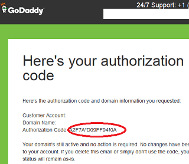
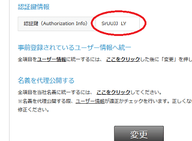

ドメインの移管方法（comやnet、orgの場合）
ドメインの管理会社については自由に変更することができます。
例えば、バリュードメインからGodaddyへ、あるいはお名前ドットコムからXドメインなどへと管理業者を変更することができます。ここでは一般的なcomやnet、orgの移管方法についてご紹介していますが、jpドメインでもほぼ同じ手順になります。
移管する際、単に管理会社を変更するだけの場合は「自分」から「自分」への移管になるので比較的簡単です。一方、他の人への譲渡や売却などの場合、「自分」から「相手先」への移管作業になるため、認証コードのやりとりや承認の待ち時間などで多少は手間がかかるかもしれません。
- 自分 → 自分（管理業者を変更するだけ）
- 自分 → 相手（ドメインの譲渡、売却）
- 相手 → 自分（ドメインの購入など）
どちらの場合でも、移管方法自体は基本的に同じでドメインの認証コード（AuthCode）を取得して申請することになります。
ドメインの移管には認証コード（AuthCode）が必要
移管する際には認証コード（AuthCode、Authorization Code）が必要になります。この認証コードは管理画面に表示されていることもありますが、たいていは申請したのちにwhoisのメールアドレスに送付されるケースが多いです。
①whois代理公開とレジストラロックを解除する
そのため、まずはwhoisの代理公開を解除しておくとよいでしょう。代理公開を解除しておかないと自分のところへは認証コードが届かないはずです。
また、レジストラロックがかかっている場合も移管できませんので、そちらもはずしておきます。
加えて、ICANNの規制により、新規取得や移管してから60日未満の場合はどの会社でも移管申請をすることができません。（※jpドメインは60日未満でも移管可。）
また、ドメインの有効期限も残り30日程度がないと移管できなかったり、会社によっては残15日程度でも可能なケースもあってまちまちですが、有効期限ギリギリでの移管は避けるようにしましょう。
②移管元から認証コードを取得する
認証コード（AuthCode）については、管理画面に表示されている場合もありますし、whoisのメールアドレス宛てに送信されるケースもあります。
■メールで通知される例（godaddy）

■管理画面に表示されている例（バリュードメイン）

あるいは、解約申請したのちに入手できるケースもあります。
③移管先の会社にて、取得した認証コードを入力して移管申請をする
移転先の会社から②の認証コードを使って移管申請を出します。その際、料金の支払いが必要になりますが、１年分の料金を支払うことで１年分の有効期間が延長されます。
④移管元、あるいは移管先の会社からの確認メールをチェック
移管申請をしたあと、移管元や移管先から確認メールがwhoisのメールアドレスへ届きます。どちらか一方のケースもありますが、たいていは「ドメインを転出していいのか」、もしくは「転入していいのか」の確認になるため、両方の会社からメールが来ることが多いです。
メール内にリンクが設置されていますので、そちらをクリックしてサイトへと移動します。その際、「承認」や「拒否」などのボタンがあるので「承認」をクリックします。英語の場合は「approval」のケースが多いです。
⑤数日後、移管完了とサイトの表示を確認する
基本的にネームサーバーの設定やwhois情報は移管しても変更されないため、サイトの表示はそのままのはずです。
けれども、移管元のドメイン事業者で無料ネームサーバーを利用している場合、サイトが表示されなくなることがあります。例えば、バリュードメインにて管理している場合で、バリュードメインの無料ネームサーバーを利用していた場合、ドメインの管理会社を変更すると設定が解除されてしまうはずです。
たいていの場合、レンタルサーバー側のネームサーバーを利用しているかと思いますので、そのままで問題ありませんが、念のため確認しておくとよいでしょう。
⑥移管先にてwhois代理公開を設定する
移管が完了しましたら、再度レジストラロックとwhois代理公開を設定します。whois検索などで実際に検索してみて、代理公開が反映されているかを確認してみるとよいでしょう。
ドメインを譲渡する際の注意点
売却などでドメインを譲渡する際、自分だけではなく相手も関わってくるので注意が必要です。
以下のような点に注意するとよいでしょう。
・移管から60日未満の場合、再度の移管申請ができない（すぐに転売できない）
まず、移管してから60日が経過しないうちは、再度、移管申請をすることができません。そのため、転売目的ですぐに売却しようとしても2か月ほどの時間が必要になります。
もしすぐに売却したい場合、同一事業者内でのユーザー間の移転（付け替え）という方法をとるケースが多いです。
例えば、バリュードメインでは「管理ユーザーの移動」の項目がありますが、このユーザー間移転の場合は管理会社内での変更になるため、移管作業は必要ありません。譲渡先にもアカウントを作成してもらい、そのユーザーに移すことで移管なしにすぐに譲渡することができます。
・取得制限のあるドメインの確認
アメリカのUSドメインなど、その地域に居住していないと取得することのできないドメイン名があります。譲渡しようと思ったものの、取得制限にかかって譲渡できなくなることも考えられますので事前によく確認しておきましょう。
・譲渡完了後、代金を入金してくれない
ドメインを売却する際、移管が完了したのに、なかなか代金を送金してくれないケースもあります。特に、海外取引の場合は注意が必要です。第三者が仲介してくれるエスクローサービスなどを利用すれば、ドメインを安全に移管することができますが、仲介手数料が高い傾向にあります。
・ドル建ての際の送金手段の確保（paypalなど）
海外オークションなどでの取引の場合、ドメインが売れたとしても、日本への送金手段がないと現金化できなくなります。一般的にはpaypalがよく利用されていますが、アカウントのグレードによっては少額しか送金できないこともあります。
・譲渡先が海外の場合は言語が通じない
譲渡先が英語圏の場合、翻訳ツールを駆使すればなんとかなりますが、ロシア語や中国語などの場合は意思の疎通が困難になるケースが多いです。特に「承認」ボタンがロシア語などで画像で表示されている場合、翻訳ツールも使えません。この場合、グーグル翻訳でサイト上の文字から言語を検出し、日本語の「承認」をその言語へ逆変換して判断するとよいでしょう。
・移管完了後もwhois情報が自分の個人情報のままで変更してくれない
ドメインの譲渡が完了した後もwhoisの情報を更新してくれないため、自分の個人情報のまま公開されていることもあります。移管する時点でユーザー情報に自動で変更されるケースも多いですが、そのままになっていた場合は連絡して変更してもらうようにしましょう。